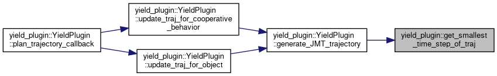
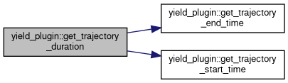
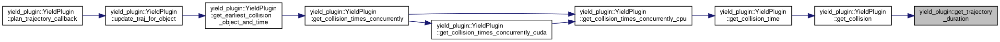
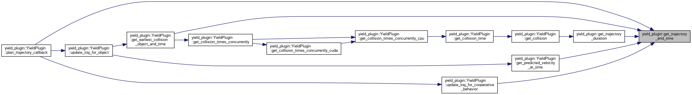
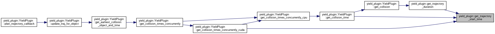
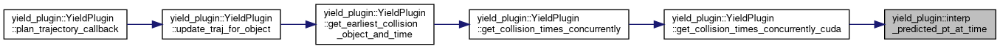

- Generated on Tue Jun 23 2026 19:24:30 for Carma-platform by
 1.9.4
1.9.4
|
Carma-platform v4.11.0
CARMA Platform is built on robot operating system (ROS) and utilizes open source software (OSS) that enables Cooperative Driving Automation (CDA) features to allow Automated Driving Systems to interact and cooperate with infrastructure and other vehicles through communication.
|
Classes | |
| struct | GetCollisionResult |
| Convenience class for saving collision results. More... | |
| struct | PointSpeedPair |
| Convenience class for pairing 2d points with speeds. More... | |
| class | YieldPlugin |
| Class containing primary business logic for the In-Lane Cruising Plugin. More... | |
| class | YieldPluginNode |
| ROS node for the YieldPlugin. More... | |
Typedefs | |
| using | MobilityResponseCB = std::function< void(const carma_v2x_msgs::msg::MobilityResponse &)> |
| using | LaneChangeStatusCB = std::function< void(const carma_planning_msgs::msg::LaneChangeStatus &)> |
Functions | |
| def | generate_launch_description () |
| double | get_trajectory_end_time (const carma_planning_msgs::msg::TrajectoryPlan &trajectory) |
| double | get_trajectory_start_time (const carma_planning_msgs::msg::TrajectoryPlan &trajectory) |
| double | get_trajectory_duration (const carma_planning_msgs::msg::TrajectoryPlan &trajectory) |
| double | get_trajectory_duration (const std::vector< carma_perception_msgs::msg::PredictedState > &trajectory) |
| double | get_smallest_time_step_of_traj (const carma_planning_msgs::msg::TrajectoryPlan &original_tp) |
| static lanelet::BasicPoint2d | interp_trajectory_pt_at_time (double query_time, const std::vector< CudaPoint > &ego_points, int num_ego_points, const carma_planning_msgs::msg::TrajectoryPlan &trajectory_plan) |
| static lanelet::BasicPoint2d | interp_predicted_pt_at_time (double query_time, const std::vector< carma_perception_msgs::msg::PredictedState > &predictions, int start_index) |
| using yield_plugin::LaneChangeStatusCB = typedef std::function<void(const carma_planning_msgs::msg::LaneChangeStatus&)> |
Definition at line 52 of file yield_plugin.hpp.
| using yield_plugin::MobilityResponseCB = typedef std::function<void(const carma_v2x_msgs::msg::MobilityResponse&)> |
Definition at line 51 of file yield_plugin.hpp.
| def yield_plugin.generate_launch_description | ( | ) |
Definition at line 31 of file yield_plugin.launch.py.
| double yield_plugin::get_smallest_time_step_of_traj | ( | const carma_planning_msgs::msg::TrajectoryPlan & | original_tp | ) |
Definition at line 455 of file yield_plugin.cpp.
References process_bag::i.
Referenced by yield_plugin::YieldPlugin::generate_JMT_trajectory().

| double yield_plugin::get_trajectory_duration | ( | const carma_planning_msgs::msg::TrajectoryPlan & | trajectory | ) |
Definition at line 67 of file yield_plugin.cpp.
References get_trajectory_end_time(), and get_trajectory_start_time().
Referenced by yield_plugin::YieldPlugin::get_collision().


| double yield_plugin::get_trajectory_duration | ( | const std::vector< carma_perception_msgs::msg::PredictedState > & | trajectory | ) |
Definition at line 72 of file yield_plugin.cpp.
| double yield_plugin::get_trajectory_end_time | ( | const carma_planning_msgs::msg::TrajectoryPlan & | trajectory | ) |
Definition at line 57 of file yield_plugin.cpp.
Referenced by yield_plugin::YieldPlugin::get_earliest_collision_object_and_time(), yield_plugin::YieldPlugin::get_predicted_velocity_at_time(), get_trajectory_duration(), yield_plugin::YieldPlugin::plan_trajectory_callback(), and yield_plugin::YieldPlugin::update_traj_for_cooperative_behavior().

| double yield_plugin::get_trajectory_start_time | ( | const carma_planning_msgs::msg::TrajectoryPlan & | trajectory | ) |
Definition at line 62 of file yield_plugin.cpp.
Referenced by yield_plugin::YieldPlugin::get_collision_time(), yield_plugin::YieldPlugin::get_collision_times_concurrently_cuda(), and get_trajectory_duration().

|
static |
Definition at line 887 of file yield_plugin.cpp.
References process_traj_logs::start_index.
Referenced by yield_plugin::YieldPlugin::get_collision_times_concurrently_cuda().

|
static |
Definition at line 867 of file yield_plugin.cpp.
References process_bag::i, osm_transform::x, and osm_transform::y.
Referenced by yield_plugin::YieldPlugin::get_collision_times_concurrently_cuda().